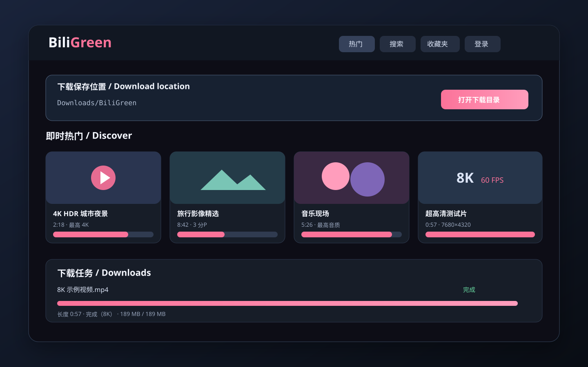

🎞️
真实质量检测Real quality detection
根据视频源与当前账号权限列出 4K、8K、HDR 等真实可用档位。Lists actual 4K, 8K and HDR streams available to the video and signed-in account.
BiliGreen 是无需安装依赖的本地 B 站下载工具。实时检测账号可用质量，支持 4K、8K、分P、收藏夹和最高音质 M4A。BiliGreen is a dependency-free local downloader for Bilibili. It detects account-authorized quality in real time, with 4K, 8K, multi-part, favorites and highest-quality M4A support.
双击一个文件，在浏览器中获得完整的本地应用体验。下载位置、画质、进度、时长和分P情况都清晰可见。Double-click one file for a complete local app experience in your browser. Location, quality, progress, duration and parts stay visible.

面向日常收藏、批量归档和高质量媒体保存。Designed for everyday collections, batch archiving and high-quality media.
根据视频源与当前账号权限列出 4K、8K、HDR 等真实可用档位。Lists actual 4K, 8K and HDR streams available to the video and signed-in account.
列出音轨码率，默认最高音质，以 M4A 原样保存，不做有损转码。Shows audio bitrates, defaults to the best track and saves M4A without lossy transcoding.
支持选择数量、全部分P，并可在成功后保留、取消或迁移收藏。Choose a count, download every part, then keep, remove or move successful favorites.
无需 Python、Go、FFmpeg 或播放器，解压后直接运行。No Python, Go, FFmpeg or media player installation. Extract and run.
内置网页播放器，并始终显示长度、分P和任务状态。Includes a browser player while keeping duration, parts and task status visible.
支持断点续传、双任务并发和内置 DASH 音视频无损合并。Supports resumable transfers, two concurrent tasks and built-in lossless DASH muxing.
界面仅监听回环地址，不向局域网或公网开放。The interface listens only on loopback and is not exposed to LAN or internet clients.
扫码 Cookie 只保存在进程内存，退出程序即清除。QR login cookies remain in process memory and are cleared when the app exits.
在 Releases 中选择 Windows 或 Linux 的 x64/ARM64 绿色版。Choose the portable Windows or Linux build for x64 or ARM64 in Releases.
仅用于你拥有版权、已获授权或平台明确允许下载的内容。不绕过会员、付费、DRM、地区或账号权限。Use only for content you own, are authorized to save, or the platform permits. It does not bypass membership, payment, DRM, regional or account restrictions.